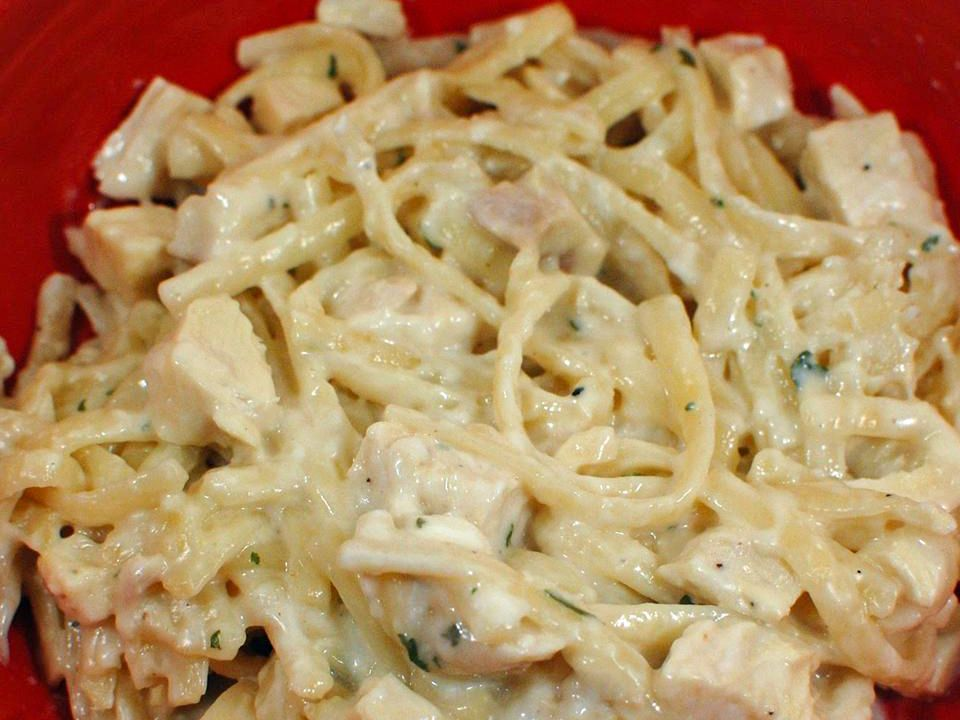

Chicken Alfredo Recipe

Description
This classic Chicken Alfredo recipe is a beloved Italian-American dish known for its rich, creamy sauce and tender chicken.
It's a go-to comfort food that's perfect for a cozy dinner or an impressive yet easy meal for guests.
Originating from Rome, Alfredo has evolved over time to include hearty proteins and extra creamy sauces.
Make it once, and it'll become a regular in your dinner rotation.
Ingredients
- 2 skinless, boneless chicken breasts
- Salt and freshly ground black pepper, to taste
- 2 tablespoons olive oil
- 12 ounces fettuccine pasta
- 4 tablespoons unsalted butter
- 4 cloves garlic, minced
- 1 ½ cups heavy cream
- 1 cup grated Parmesan cheese
- 1 teaspoon Italian seasoning
- 2 tablespoons chopped fresh parsley
How to Make Chicken Alfredo Step-by-Step
- Season both sides of chicken breasts with salt and pepper.
- Heat olive oil in a skillet over medium heat. Cook chicken for 5-7 minutes per side until golden and cooked through. Remove and slice.
- Cook fettuccine in salted boiling water until al dente. Drain and set aside.
- In the same skillet, melt butter. Add garlic and sauté until fragrant.
- Pour in heavy cream and stir. Bring to a simmer, then reduce heat.
- Stir in Parmesan cheese and Italian seasoning. Mix until sauce thickens.
- Add cooked pasta to the sauce and toss to coat.
- Top with sliced chicken and garnish with fresh parsley.
What to Serve with Chicken Alfredo
- Steamed Broccoli
- Garlic Bread
- Caesar Salad